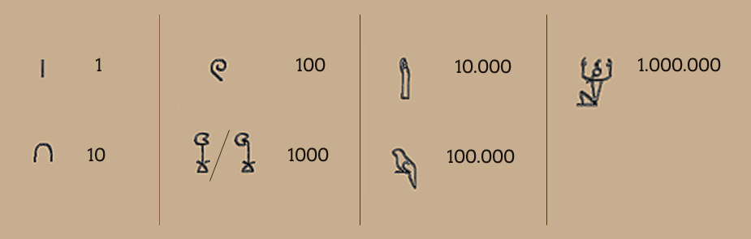

.0123456789.
Цифри це найдавніші символи у світі. Перші цифри були просто рядками один рядок=1 та два рядки=2.

Єгипетські цифри

Римські цифри I II III IV V VI VII VIII IX X
Числа — найважливіші символи у нашому житті, тому що ми можемо порахувати, наприклад, скільки у нас яблук. Ось чому цифри найважливіші.